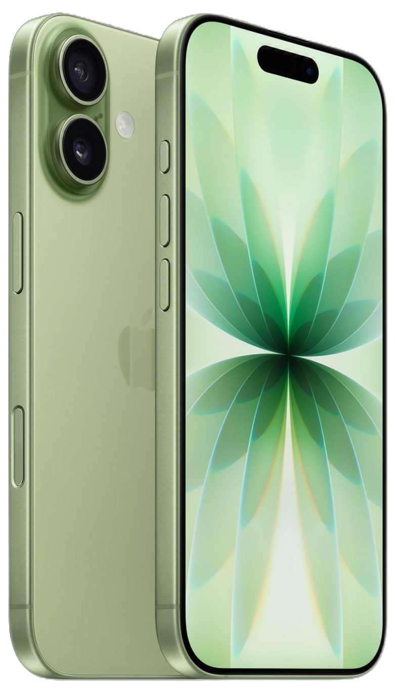
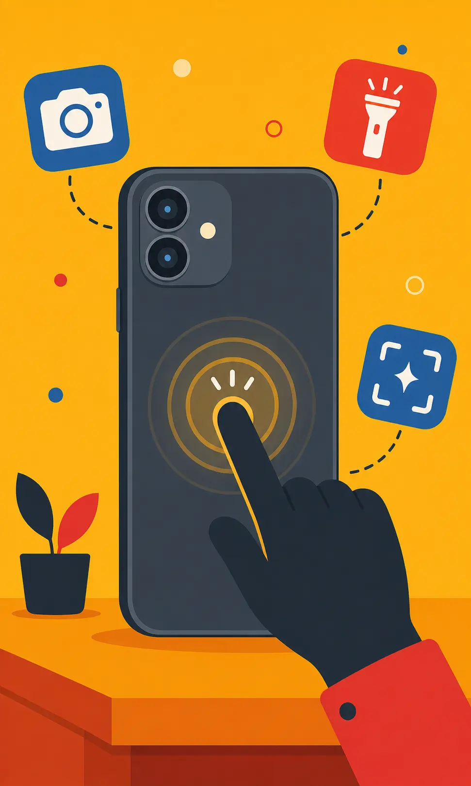
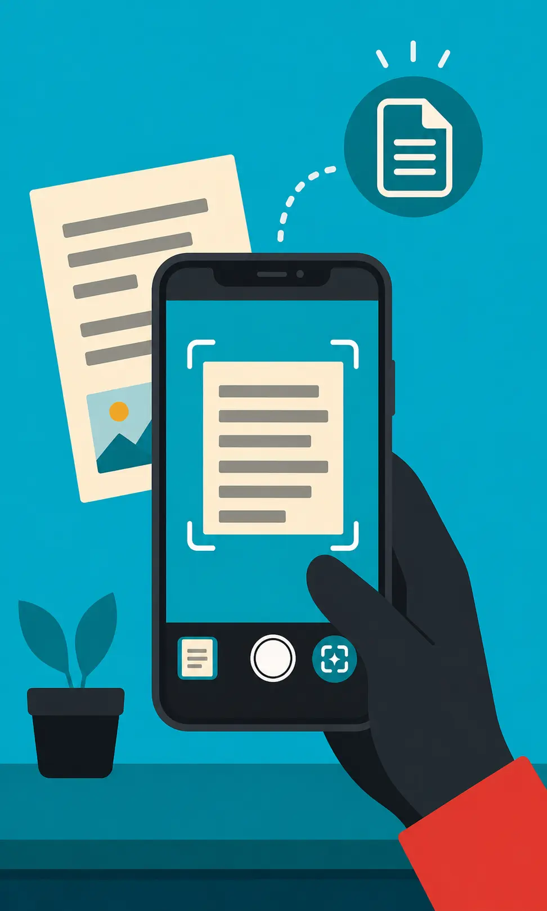
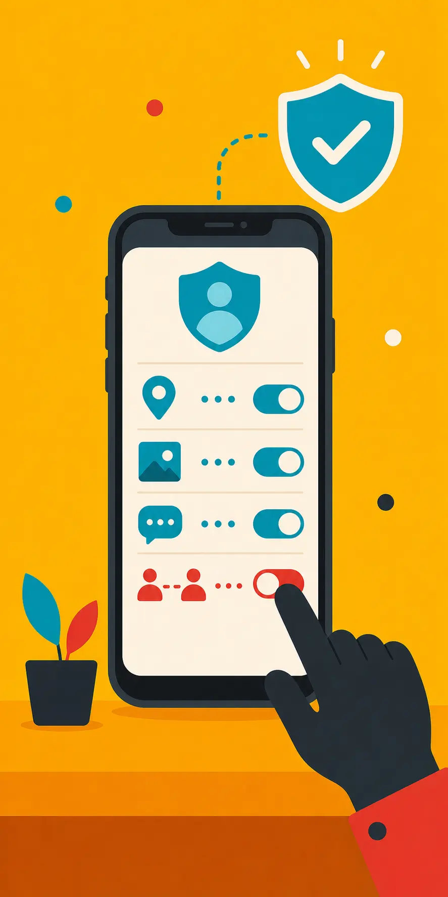
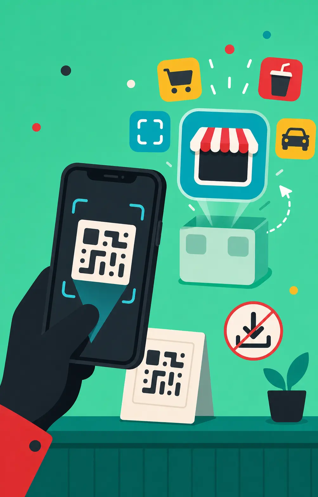
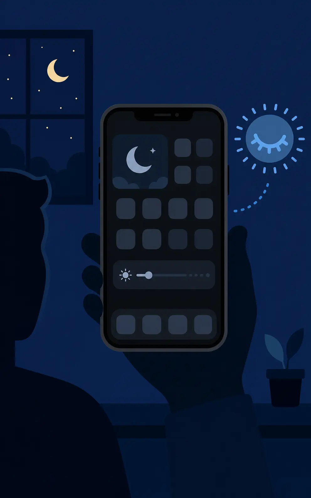
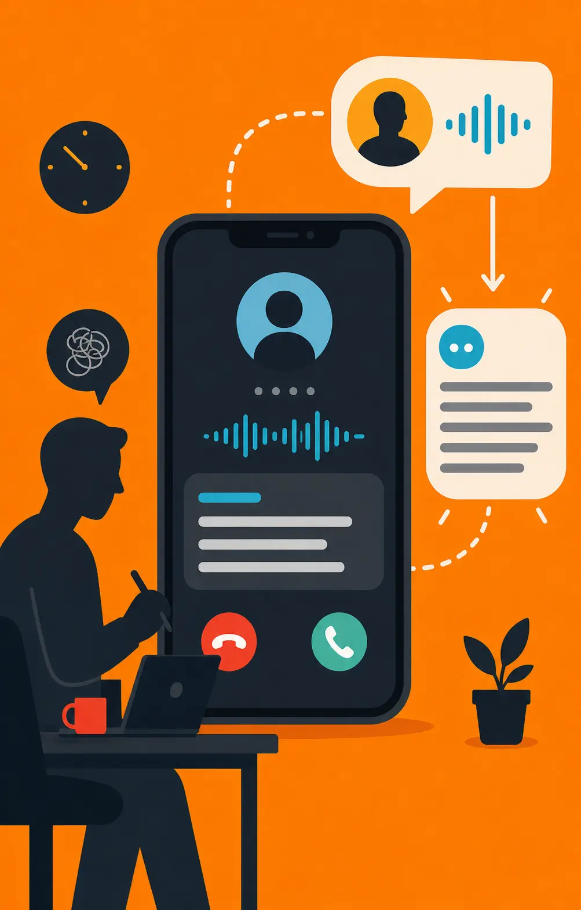
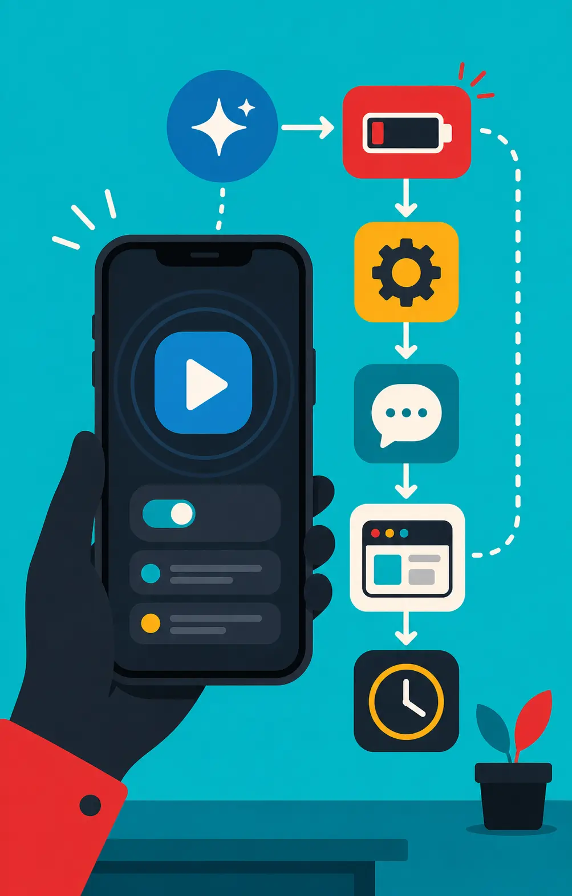
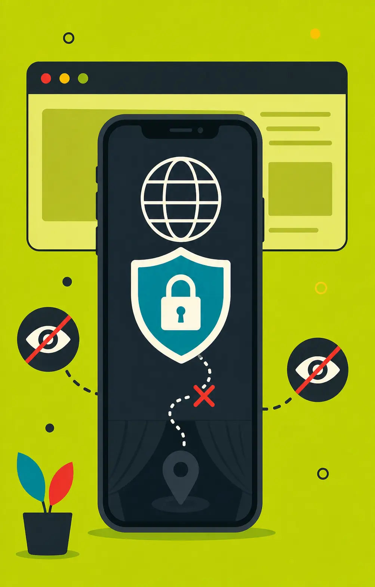

Your Iphone
can do
much more than you think
Most iPhone users only scratch the surface of what their devices can do. Hidden within iOS are powerful tools designed to improve productivity, privacy, accessibility, and everyday convenience. From Back Tap shortcuts to Live Text and advanced automation, these features can make your iPhone smarter and easier to use.
This guide highlights 10 useful hidden iPhone features that many users overlook. Whether you're a new iPhone owner or a long-time Apple user, you'll discover practical tools that can help you get more out of your device.
Back Tap lets you control your iPhone by tapping the back of the phone two or three times. You can use it to take a screenshot, open the camera, turn on the flashlight, or run a shortcut. It turns the back of your iPhone into a hidden extra button.

Live Text lets your iPhone recognize text inside photos, screenshots, and the camera. You can copy phone numbers, addresses, emails, or notes without typing them manually. It is useful when you want to quickly save or use information from an image.

This feature lets you protect private apps using Face ID. When someone tries to open a locked app, the iPhone will ask for your face scan first. It is useful for apps like Photos, Messages, banking apps, and social media.
Safety Check helps you review who has access to your location, photos, messages, and shared information. Instead of searching through many settings, it keeps important privacy controls in one place. It is useful when you want to quickly stop sharing personal information.

App Clips let you use a small part of an app without downloading the full app. For example, you can quickly pay, order, scan, or rent something. It saves time and storage because you only use the part you need.

Remote iPhone Assistance helps someone guide another person through iPhone problems from far away. This can be useful when helping family members or friends who are not comfortable with settings. Instead of explaining everything blindly, it becomes easier to show or guide them step by step.
Ultra Dark Mode makes your iPhone screen more comfortable to use in dark places. It reduces bright colors and makes the display easier on your eyes at night. It can also make the phone feel cleaner and more modern, especially on OLED screens.

Live Voicemail shows a live text preview while someone is leaving a voicemail. This helps you understand what the caller is saying without answering immediately. It is useful when you are busy but still want to know if the call is important.

Shortcuts Automation lets your iPhone do tasks automatically based on your actions. For example, it can turn on Low Power Mode, open apps, send messages, or change settings. It is like teaching your iPhone to do repeated tasks for you.

Hide IP Address in Safari helps protect your privacy while browsing websites. Your IP address can give websites some information about your device and general location. This feature makes it harder for websites and trackers to build a profile about you.
